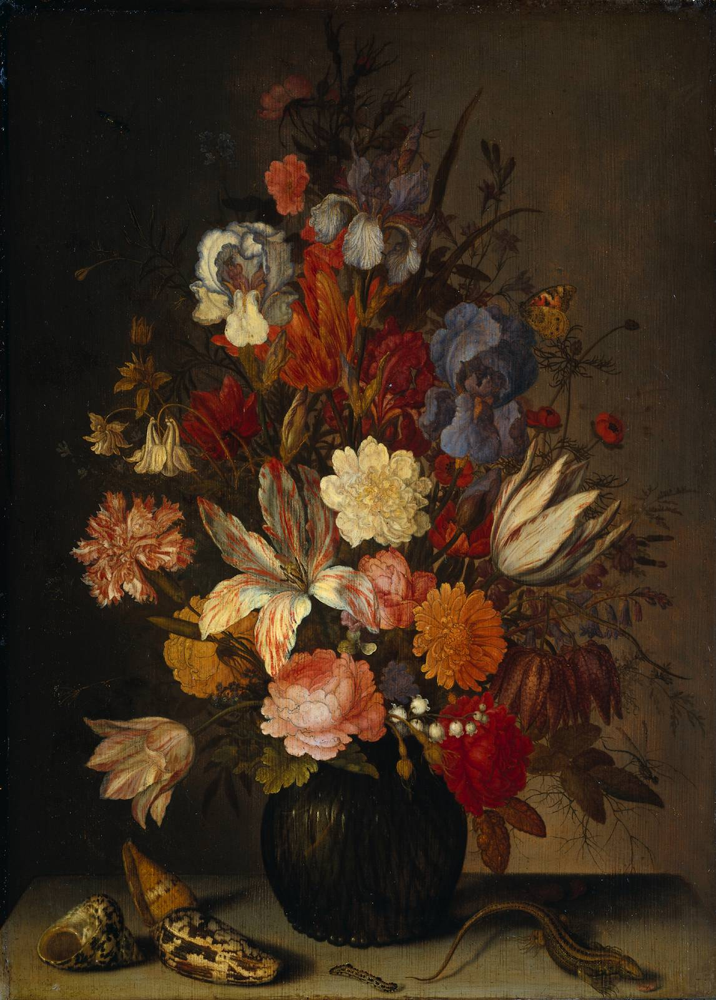

作品名 「花」
花言葉 「愚か」「断固として勝つ」「必ず手に入れる」
オダマキ
「愚か」
花名のオダマキは、花の形が麻糸を巻くために使った苧環（オダマキ）に似ていることに由来します。英名の「コランバイン」と言います。「コランバイン」とは、ヨーロッパの道化芝居に出てくる娘の名前です。彼女が持つ杯が、オダマキの花の形に似ていることから、道化の代名詞でもある「愚か」という花言葉がつけられました。
花
バルタザール・ファン・デル・アスト
バルタザール・ファン・デル・アストはオランダの印象派画家です。彼は美しい風景画、海景、花や家族などの写実的な作品を生み出しました。代表作として「花壇」や「家族のピクニック」などがあります。彼は素晴らしい光の効果を利用して描かれた色彩豊かな画作品で知られています。
| 作品名 | 花 |
| 作者 | バルタザール・ファン・デル・アスト |
| 制作年 | 1625年〜1630年頃 |
| 寸法 | 43cm × 59cm |
| 所蔵 | アムステルダム国立美術館 |